Windscreen
Windscreen
To remove
1. Open the door windows to avert the risk of the windscreen being forced out should a car door be closed creating overpressure in the cabin.
2. Remove the side strips from the windscreen.
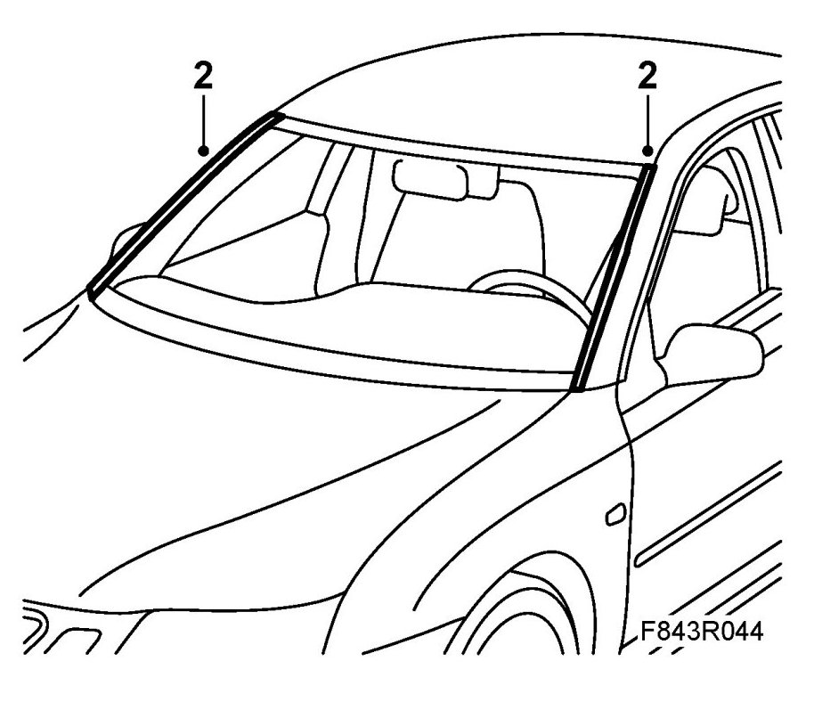
3. Remove the Bulkhead cover.
4. Remove the A-pillar trim by removing the cover plate using 82 93 474 Removal tool. Remove the retaining screws from the A-pillar trim. Take hold of the lower edge of the A-pillar trim and pull it carefully straight out.
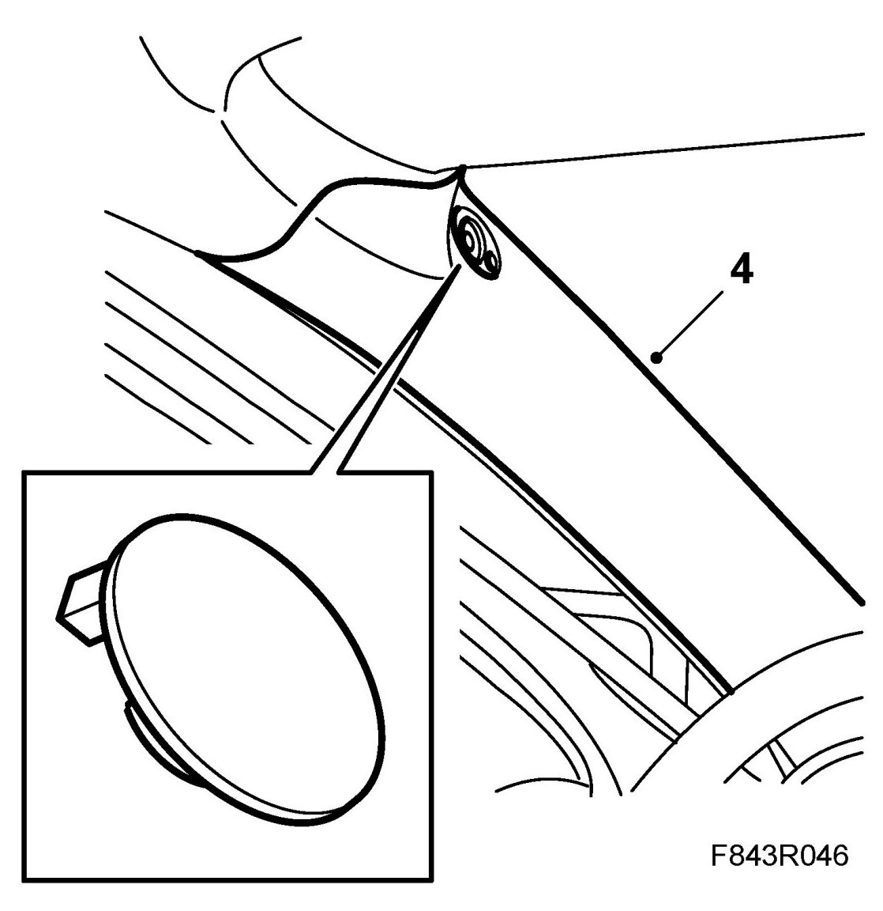
5. Cars with rain sensor: Remove the Rain sensor.
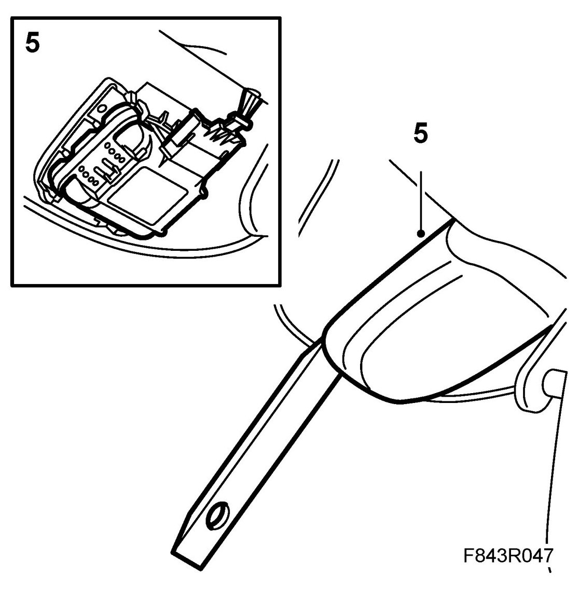
6. When changing a bonded window, use 82 93 714 Kit, window removal tool. If the window is so damaged that it is not possible to affix the suction cups, use 30 14 099 Cutting wire handles and cutting wire, and with the help of a colleague, saw out the window.
WARNING: Use the protective equipment that is supplied with the windscreen removal and adhesive kit, such as the goggles and protective gloves.
7. Measure out 6,5 m of cutting wire.
8. From inside, press the awl through the bead of adhesive at the bottom of the window, as illustrated.
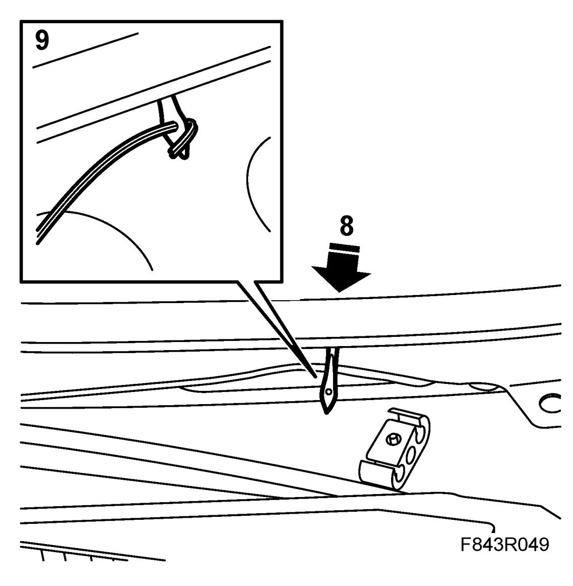
9. Thread the ends of the wire into the eye in the awl and bend the ends so that the wire do not slip out.
10. Pull the awl back through the adhesive into the cabin. Pull through roughly 0,9 m of wire.
WARNING: Ensure that the wire is not connected to the battery terminals if the cover is removed, otherwise there is a risk of short-circuit/fire.
11. Position the wire around the windscreen (B). Place the wire under the upper moulding. Press it in with the help of the plastic tool provided with the kit ( A). Make sure the that the wire lies around all the corners. Pull in slack and check the position of the wire. Pull the wires and check that wire is seated between the metal and lower edge of the windscreen.
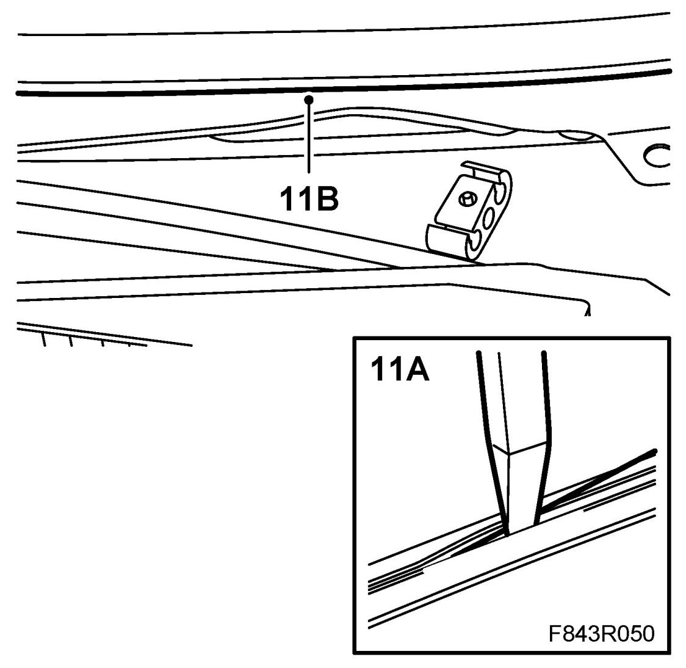
12. Unhook the cutting wire from the awl. Straighten the ends. Remove the awl from the car.
13. Fit the wire coilers in the corners on the inside of the window.
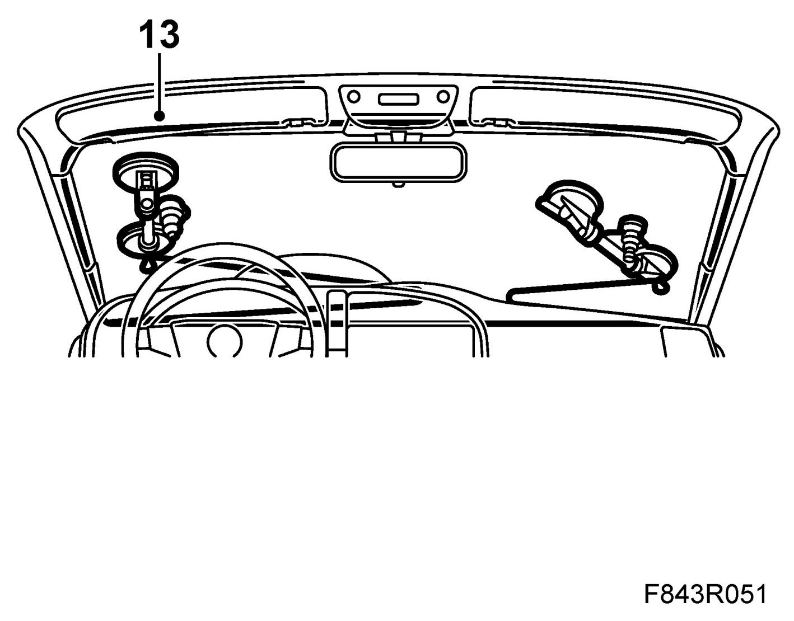
14. Attach the ends of the wire to the wire coilers. Make sure that the wires do not cross. Use the groove in the wire coiler's suction cups to achieve a suitable angle.
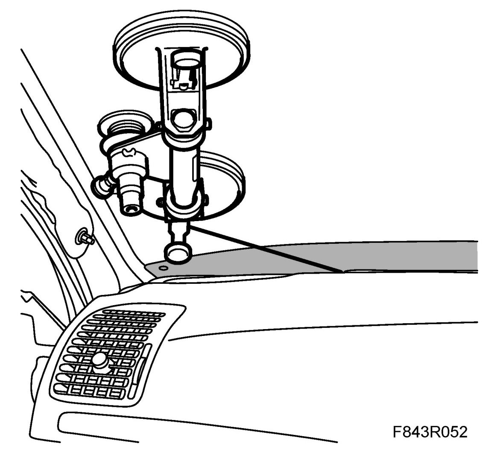
15. Press down the plastic protector between the cutting wire and dashboard to protect the interior equipment.
16. Use a ratchet handle to wind the wire coiler so that the wire cuts through the bead of adhesive. Move the plastic protection as the wire changes position. Move the wire coiler successively to maintain a suitable angle. An acute angle cuts better. If necessary, use the other wire coiler to help. If there is a risk of the wire breaking, stop winding for 10-15 seconds to allow the wire time to work through the adhesive.
17. When the wire starts to cut along the top edge of the windscreen, fit the protective tool with suction cup between the cutting wire and metal roof to protect the interior equipment. Move the wire coiler and protective tool successively as the window comes loose.
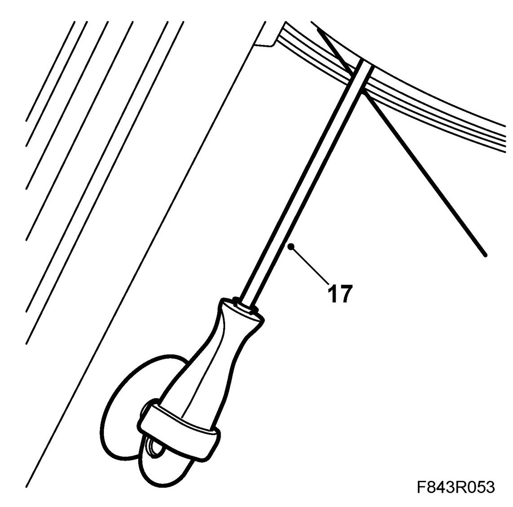
18. Fit the lifting handle to the outside of the window.
19. With the help of a colleague, lift away window.
To fit
IMPORTANT: Betaseal X 2500 cures in 1 hour at 23 degrees C and 50% relative humidity. To avoid the glass from coming loose or its position changing during the curing time, the car must not be subjected to jolts or blows. The doors, tailgate and bonnet must not be shut. The car must not be rocked or rolled. Neither must the glass be pressed in while the adhesive is curing.
Use 30 05 600 Adhesive kit, window glass for bonding windows. To avoid mixing up the cleaner and primer, the tubes are different colours:
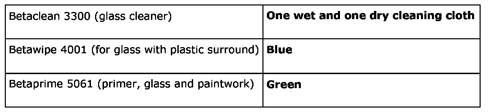
The car must be standing on all four wheels on a level surface when the windscreen is fitted in place. To ensure the best possible results, it is extremely important for all surfaces that have been cleaned or primed to be kept free from dust and dirt while work is in progress. The same goes for the adhesive when it has been applied. Once work has been started it should therefore be continued without interruption until the windscreen has been fitted and the adhesive hardened. The adhesive begins to harden as soon as the contents of both tubes are mixed. The windscreen must therefore be fitted into place within 5 minutes from the time that application of the bead of adhesive was first begun. Note that points 7-11 must without exception be carried out in the given order to ensure satisfactory results with maximum adhesion.
1. Cut down the bead of adhesive on the window flange to a maximum height of 2 mm. Use the cutting tool provided in the removal kit. If the old window is to be refitted, the bead of adhesive on this must also be cut down to max. 2 mm. Old and firmly adhered adhesive gives a good base for the new adhesive. Loose adhesive on the glass or metal must be removed.
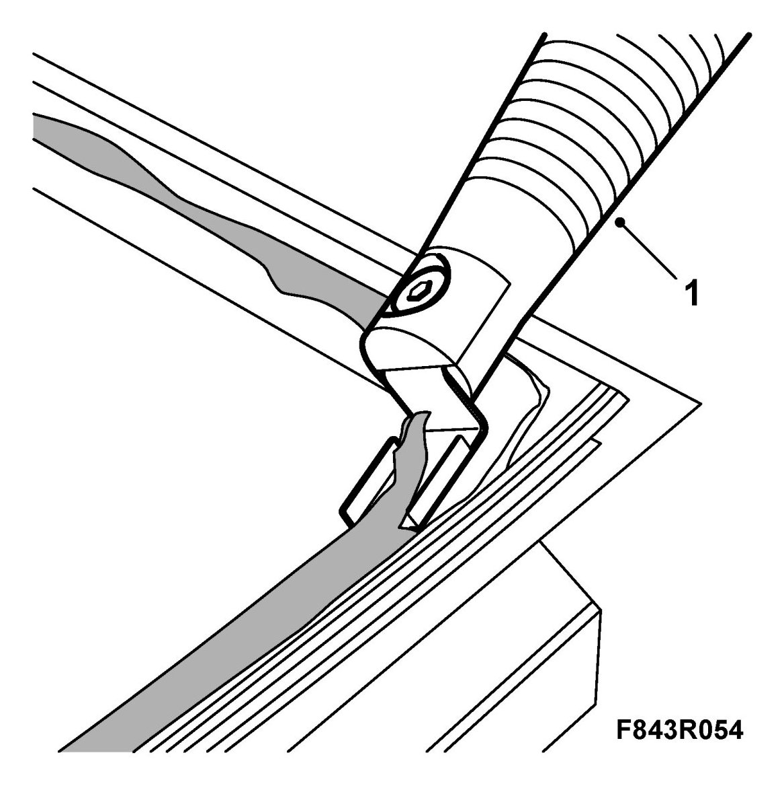
2. Remove loose particles and dirt from the metal flange with a vacuum cleaner.
3. Make good any damage to the paintwork.
- Scrape off any loose flakes of paint with a knife.
- Wash clean with Teroson Rengorare FL (Cleaner).
- Apply primer. Use Standox 1K Primer Filler.
- Apply the finish coat.
IMPORTANT: The paintwork must be flawless to prevent the onset of corrosion. In addition, an imperfect paintwork repair could result in the layers of paint separating under the bead of adhesive.
4. If there is no old adhesive, or if the adhesive is not intact, primer must be applied to the surfaces with which the adhesive will be in contact. Use Betaprime 5061 (green), on any touched-up surfaces. Do not use body primer on old, well-cohered adhesive. Make sure the spacers are in position at the bottom edge.
5. Fit the lifting handles to the outside of the windscreen and place the window inside up on a workstand at a suitable height.
6. Press on the decor strip on the upper edge of the windscreen. The decor strip must extend the same amount at each end. Avoid touching the primed surface.
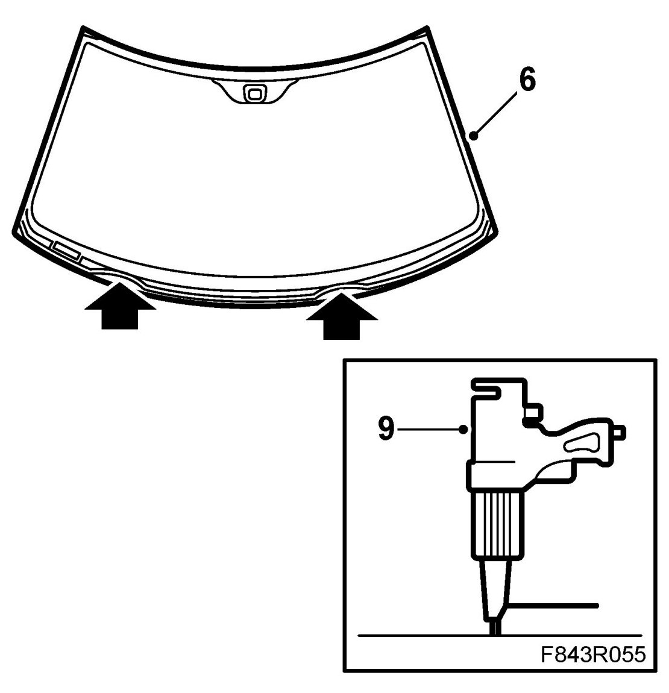
7. Carefully wash the edges of the window with Betawipe 3300. Carefully wipe the edges using the wet cleaning cloth. Dry with the dry cleaning cloth provided in the adhesive kit. Avoid touching the cleaned surface.
IMPORTANT: Do not allow the cleaning agent to dry naturally as it may leave traces of grease on the glass. Always dry with clean, lint-free rags and refold them frequently.
8. Apply Betaprime 5061 (green) to the cleaned surface. Allow the primer to dry for 10 minutes.
NOTE: If the windscreen is to be secured with tape after being fitted, make sure the roof has been cleaned before starting to fit the windscreen.
9. Apply the adhesive as follows:
- Cut off the tip of the adhesive cartridge nozzle to provide a suitable bead of adhesive.
- Hold the gun perpendicular to the windscreen. Start at the bottom of the windscreen. Apply a bead of adhesive to the primed surface along the centre of the dotted line. Make sure there are no gaps in the adhesive bead.
IMPORTANT: The adhesive starts to cure as soon as the contents of the two tubes is mixed. Fit the window glass within 5 minutes of starting to apply the bead of adhesive.
10. With the help of a colleague, fit the window.
10.a. Adjust the position of the window so that the moulding touches the edge of the roof, and press the window towards the lower spacers.
10.b. Adjust the lateral position of the window so that it is equidistant from left and right-hand sides.
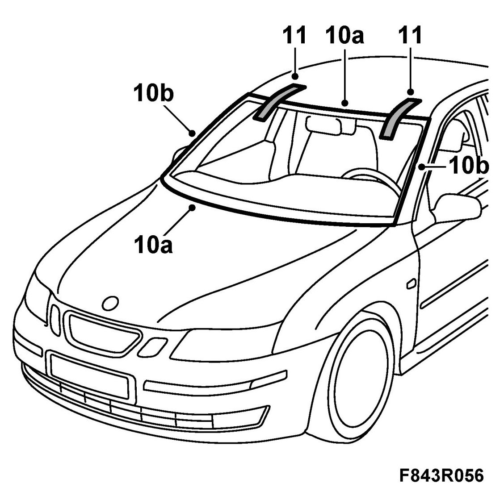
11. Secure the window with tape or straps so that it is held against the edge of the roof.
IMPORTANT: There must be no strain on the windscreen.
12. Remove the adhesive cartridge from the glue gun.
13. Allow the adhesive to cure before continuing. Betaseal X 2500 cures in 1 hour at 23 degrees C and 50% relative humidity.
14. Position the A-pillar trim. Fit the retaining screws to the A-pillar trim. Fit the cover plate to the A-pillar trim.
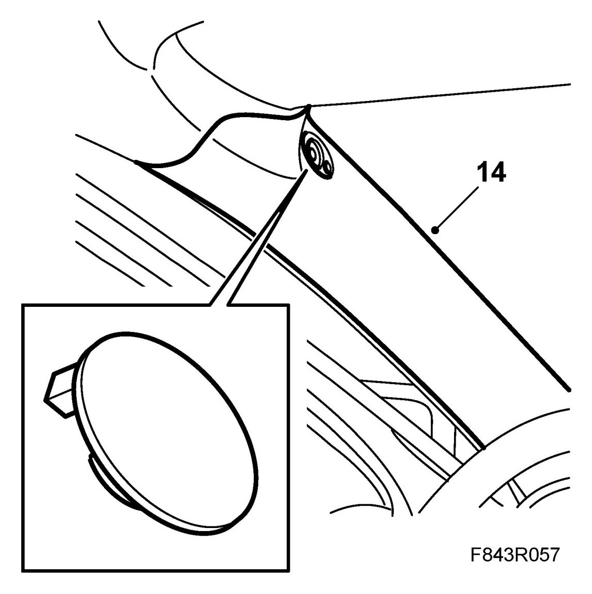
15. Fit the cover over the bulkhead partition space.
16. Fit the windscreen side strips.
17. Cars with rain sensor: Fit the rain sensor.
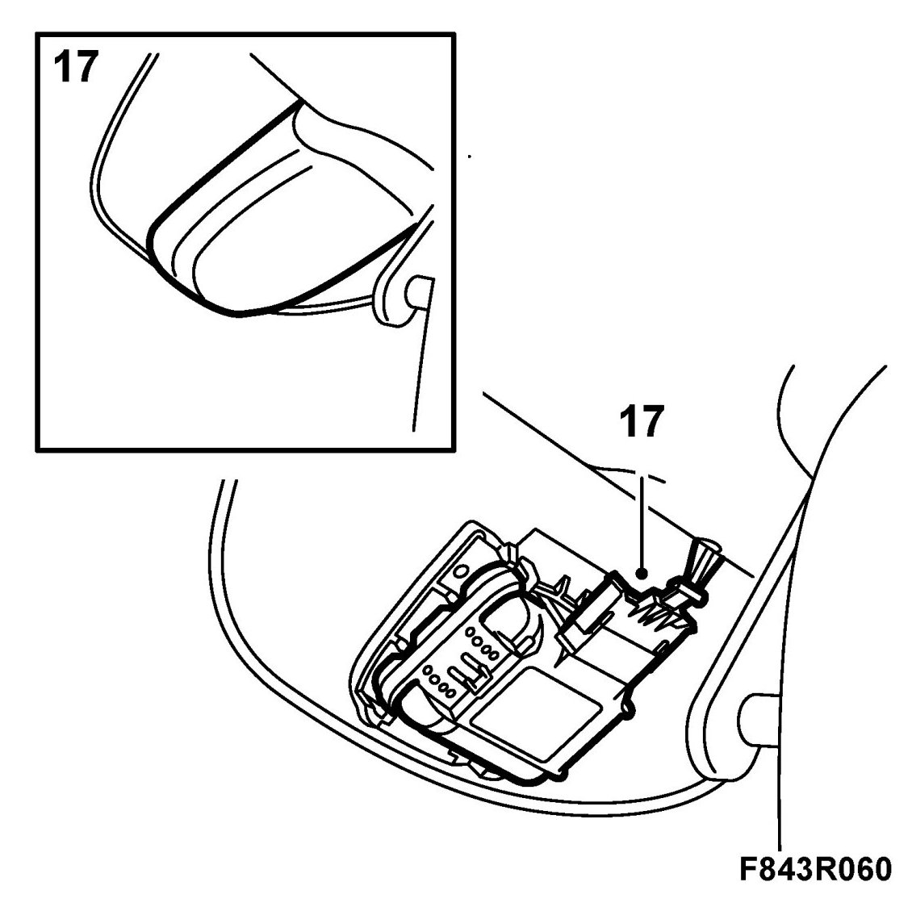
18. Remove the tape and clean the inside and outside of the window.
19. Check the windscreen washers, the operation of the windscreen wipers and their parking position.